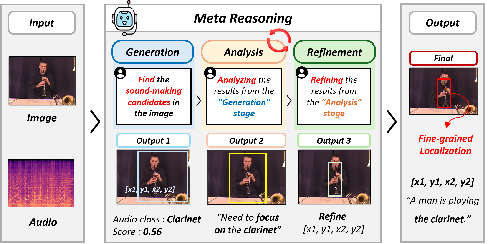
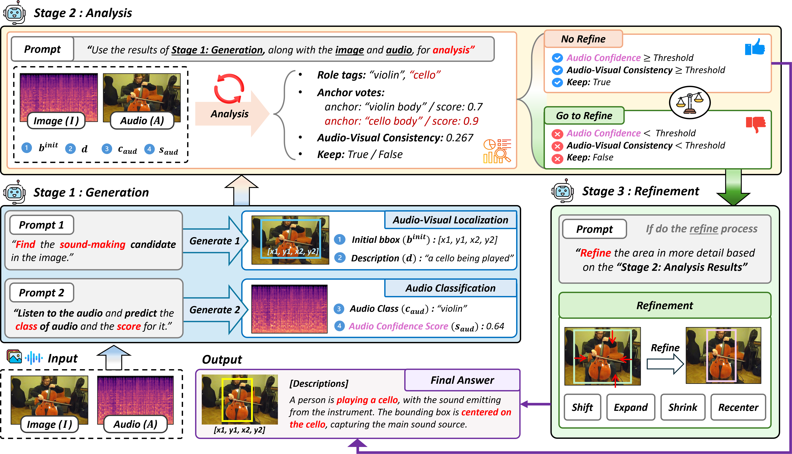

Overview of the proposed GAR-SSL framework.
Abstract
Sound source localization task aims to identify the locations of sound-emitting objects by leveraging correlations between audio and visual modalities. Most existing SSL methods rely on contrastive learning-based feature matching, but lack explicit reasoning and verification, limiting their effectiveness in complex acoustic scenes. Inspired by human meta-cognitive processes, we propose a training-free SSL framework that exploits the intrinsic reasoning capabilities of Multimodal Large Language Models (MLLMs). Our Generation-Analysis-Refinement (GAR) pipeline consists of three stages: Generation produces initial bounding boxes and audio classifications; Analysis quantifies Audio-Visual Consistency via open-set role tagging and anchor voting; and Refinement applies adaptive gating to prevent unnecessary adjustments. Extensive experiments on single-source and multi-source benchmarks demonstrate competitive performance. The source code is available at this GitHub repository.
Method
The proposed GAR pipeline consists of three stages.
- Generation: The MLLM produces initial bounding boxes for sound-emitting objects and predicts audio classifications.
- Analysis: Audio-Visual Consistency is quantified through open-set role tagging and anchor voting, enabling explicit verification of audio-visual correspondence.
- Refinement: Adaptive gating selectively adjusts unreliable predictions while preventing unnecessary modifications to already reliable localization results.

Generation-Analysis-Refinement pipeline for training-free sound source localization.
Results
Extensive experiments on single-source and multi-source sound source localization benchmarks demonstrate that GAR-SSL achieves competitive performance without task-specific training.
Qualitative Results

Qualitative localization results on single-source and multi-source sound source localization benchmarks.

Additional qualitative localization results of GAR-SSL.
BibTeX
@article{park2026generate,
title={Generate, Analyze, and Refine: Training-Free Sound Source Localization via MLLM Meta-Reasoning},
author={Park, Subin and Kim, Jung Uk},
journal={arXiv preprint arXiv:2604.06824},
year={2026},
url={https://arxiv.org/abs/2604.06824}
}